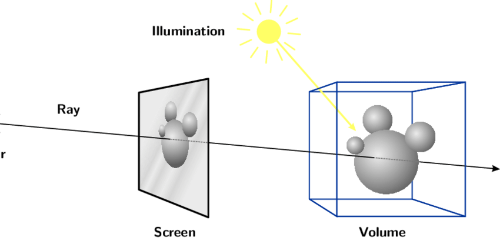

ุงุฒุงู ุชุนู ู Volume Casting
ุงุฒุงู ุชุนู ู Volume Casting
ูู ุงูู ุฏููุฉ ุฏู ููุชููู ุนู ุงุฒุงู ูุนู ู ุงู ุจูู ูุชูุดู ูููุชุดุฑ ู ุด ู ูุฌูุฏุฉ ูู SceneKit بس ุนูุดุงู ูุนู ู ุงูุงู ุจูู ูุชูุดู ู ุญุชุงุฌูู ูููู ุงูุชุฑ ู ู ุนู ุงููููุณุจุช ููุณูุ ุจุนุฏูู ูุดูู ุงูู ุงูู ุดููุฉ ุงููู ุนูุฏูุงุ ุจุนุฏูู ูุดูู ุงุฒุงู ู ู ูู ูุญููุง ุจุงูููุฏููุฌ
ุฅูู ูู ุงูุฑุงู Ray
ุงูุฑุงู ูู ุณูุงู ุงููู ุจููุชุฑ ุฌุฑุงูููุณ ู ูู ุณูุงู ุญุฏูุซูุง ุงูููุงุฑุฏุฉ ูู عبارة ุนู ููุทุฉ ู ع ุงุชุฌุงูุ ูุนูู ุชูุฏุฑ ุชููู ุงูู ุงุณู آخر ู ุงฺูคููุชูุฑ
ู ุชูุฏุฑ ุชุชุฎูู ุงูุฑุงู ุนูู ุงููุง ููู ููุฒุฑ ูู ุงูุฏูุ ููู ุจูุฒูุดูุ ููุทุนุง ููู ุงุชุฌุงูุ ุงููู ูู ุงุชุฌุงู ุงูุงูุงุฑุฉ
ูู ุงูุตูุฑุฉ
rPos = ray position in the space
rDir = ray dieraction in the space
ุงูู ูู ุงูุฑุงู-ูุงุณุชููุฌ Ray Casting
ุงูุฑุงู ูุงุณุชููุฌ ูู ุนู ููุฉ ุจูุญุงูู ูุนุฑู ูููุงุ اذا ุงูุฑุงู ุงููู ุนูุฏูุง ูุชุชูุงุทุน ู ع ุงู جزء ูู ุงูุณุจูุณ ููุง ูุง
ูุฃูู ุงูุฑุงู ูููุง ููุทุฉ ูุงุชุฌุงู ุชูุฏุฑ ุชู ุฏูุง ูู ุงูุณุจูุณ ุจุฑุงุญุชูุ ูู ุงูุตูุฑุฉ ุฏู ุงูุฑุงู ุชู ู ุฏูุง ูู ุงููุฑุบุ ูุบุงูุฉ ู ุง ูุทุนุช ุงูููุฑุฉ ุงููุจูุฑุฉ ูู ุงููุตุ ูุจูุฏุง ูููู ุนุฑููุง ุงูู ุงูุฑุงู ุฏูุ ุจุชูุทุน ุงูููุฑุฉ ุงููู ูู ุงููุต..
ู ุซุงู ุนูู ุงูุฑุงู-ูุงุณุชูุฌ
ููู ุงุณุชุฎุฏุงู ุงุช ูุชูุฑ ููู ูุถูุน ุฏุงุ ู ู ุงุดูุฑูุง ู ุงูู ูุงุ ุจูููู ู ع ุงูู ุงูุณ بتاع ุงููู ุจููุชุฑ
ุชุฎูู ุงูู ุนูุฏู شاشة ููู ุงูุจุฌูุชุณ ูุชูุฑ ูููุง ุซุฑู-ุฏู ู ุนุงูุฒ ูู ุง تضغط ุจุงูู ุงูุณุ ุงูุฌุฒุก ุงูู ุนูู ุงููู ضغط ุนููู ูููู ูุชุบูุฑุ ุงู ูุชุญุฏุฏุ ุฒูู ุฒู ุงู ูุนุจุฉ ุจุงูู ุงูุณ ุจุชูุนุจูุง ع ุงููู ุจููุชุฑุ ุงู ุญุชู ูู ุงูู ูุจุงูู ุงูุชุงุชุดุ ูู ุซุงู ุงูุตูุฑุฉ ุฏู

ูู ุง ุชููู ุงูุช ุดุงูู ุงููุนุจุฉ (ุณูุฑูู ุณุจูุณ) ูุฃูุช ุดุงูู ุงูุนุงูู ู ู ุฒุงููุฉ(ุนุงูู ) ุงููุงู ูุฑุงุ ูู ุง بتضغط ุจุงูู ุงูุณ ุนูู ู ูุงู ู ุนููุ ุงููู ุจูุญุตู ุงูู ุจูุทูุน ุฑุงูุ ู ุงูุฑุงู ุฏู ุจุชูู ู ูุบุงูุฉ ู ุง تخبط ูู ุงู ุนูุตุฑุ ู ู ู ูู ูู ุงููุงูุน ู ุชุฎุจุทุด ุฎุงูุต ูู ุงูุช ضغط ูู حتة ู ูููุงุด ุงูุจุฌูุช
ูุงุญุธ ุงูู ุงูุชุญุฏู/ุงูู ุดููุฉ ููุง ุงูู ูู ุง بتضغط ุจุงูู ุงูุณ ูุฃูุช بتضغط ูู ุงูุณูุฑูู ุณุจูุณ ูุฏุง ุจูููู 2D ููู ุงูุนุงูู ุงููู ููู ุงูุงูุจุฌูุชุณ ุจุชุงุนุชู ุจูููู ุซุฑู ุฏูุ ู ุงููุฏู بتاع ุงูุฑุงู ูุงุณุชูุฌ ุงูู ูุนุฑู اذا ู ูุงู ุงูู ุงูุณ ุจุชุงุนู ูู ุงูุชู-ุฏู بعد ู ุง ูุชุญูู ูุซุฑู-ุฏู ูููู ุณ جزء ู ู ุงูุงูุจุฌูุชุณ ุจุชุงุนุชู ููุง ูุง
ูู ุง ุจูููู ุงูุจุฌูุชุณ ูุฃุญูุง ููุตุฏ ุงู جزء ุซุฑู-ุฏู ูู ุงูุจุฑูุงู ุฌ/ุงููุนุจุฉ ุฒู ุงูุงุดูุงู ุงููู ููู ع ุงููู ููุ ุงู ุงูููุฑ ุงููู ูู ุงูู ูู ุซุงูุ ูููุฐุง
ููุง ู ุซุงู ุงูุถุญ ูููุชูุฌุฉ ุงูููุงุฆูุฉุ ููู ุจุณูุทุฉ ูุนููุง ุ ุงูู ุจุชูุฏุฑ ุชุนุฑู ุงูููุฑุฉ ุงููู ุงูู ุงูุณ ضغط ุนูููุงุ ูุฏุง ู ุฌุฑุฏ ู ุซุงู ู ู ุงู ุซูุฉ ุงุณุชุฎุฏุงู ุงูุฑุงู-ูุงุณุชูุฌุ ู ูู ุงูุญุงูุฉ ุฏู ุจูุทูู ุนููู
3D **Hit Testing/ Mouse Picking/ Picking
ู ู ู ูู ูููู ุณุคุงูู ูู: ุงุฒุงู ุงูุฑุงู ูุงุณุชูุฌ ุจูุญุตู ุฑูุงุถููุงุ ูุฃูู ุงุญูุง ูุตููุงู ุจุงูููุงู ููู ูู ุงููุงูุน ุฑูุงุถูุง ูู ุจูุญุตู ุนูู ุงูุชุฑ ู ู ุฎุทูุฉุ ู ูุธุฑูุง ูุฃูู ุฏู ุงุตูุง ู ูุฏู ุฉ ููู ูุถูุน ุงููู ุนุงูุฒ ุงุชููู ูููุ ู ุด ูุชุทุฑู ููุชูุงุตูู ุงูุฎุงุตุฉ ุจุงูุฑุงู ูุงุณุชูุฌ.**
ุงูููุช ุชูุณุชูุฌ ูู ู ุญุฑูุงุช ุงูุงูุนุงุจ
Unity Ray casting
ุงูููุช-ุชูุณุชูุฌ ุฒู ู ุง ูุถุญูุง ููู ببساطة ุจูุณุชุฎุฏู ูู ุนุฑูุฉ اذا ุงูุช ูู ุณุช جزء ู ุนูู ูู ุงููุนุจุฉ ุงู ุงูุจุฑูุงู ุฌ ุงูุซุฑู-ุฏู ุงููู ุงูุช ุดุบุงู ููู ููุง ูุงุ ููุธุฑุง ูุฃูู ูุนุชุจุฑ ุดูุก ุงุณุงุณูุ ูุนุชุจุฑ ู ูุฌูุฏ ููู ุงู ุจูู ูุชูุดู ูู ูู ู ุญุฑูุงุช ุงูุงูุนุงุจ
ูู ููููุชู ู ู ูู ุชุนู ู ูุฏุง
Ray ray = Camera.main.ScreenPointToRay(Input.mousePosition);
RaycastHit hit;
if (Physics.Raycast(ray, out hit, 100))
{
Debug.Log(hit.transform.name);
Debug.Log("hit");
}
ูุงููุดู Phisycs.RayCast ูู ุงููู ุจุชููู ุจุนู ู ูู حسابات ุงููุงุณุชูุฌ ูู ููููุชู
SceneKit Ray Cast
ูู ุณูู ููุช ู ู ูู ุชุนู ู ุฑุงู ูุงุณุชูุฌ(ุขุจู ุจุชุณู ูู ููุช ุชูุณุชูุฌ) ุนู ุทุฑูู ุงูููุฏ ุงูุขุชู ู ููุฌูุจูู اذا ูุงูุช ุงูุถุบุทุฉ ุจุชุงุนุชู ุนูู ุงูุจุฌูุช ู ุนูู
let locationOfTapIn2D = tapRecognizer.location(in: sceneView)
let hitResults = diagramView.sceneView.hitTest(locationOfTapIn2D, options: nil)
let tappedNode = hitResults.first?.node //the object you have tapped
ูู ุงููู ูุงุช دا ุฌู ููุ ุงุชููู ูุง ุนู ุงูุฑุงูุ ู ุนู ุนู ููุฉ ุงูุฑุงู ูุงุณุชูุฌุ ู ุงุฒุงู ู ุชููุฑ ูู ู ุญุฑูุงุช ุงูุงูุนุงุจ ุงูู ุฎุชููุฉ
حاجات ุงูุฑุงู-ูุงุณุชูุฌ ู ููุฏุฑุด ูุนู ููุง
ุชุฎูู ุงูู ุนูุฏู ุงุจูููุดู ุจูุชุทูุจ ุงูู ุชุฌูุจ ุงูุฑุจ ุงูุจุฌูุชุณ ูุถุบุทุฉ ู ุนููุฉ
ุจู ุนูู ุงูู ูู ุงูุตูุฑุฉ ุฏู ู ุทููุจ ู ูู ุชุฌูุจ ุงูุฑุจ ุงูุจุฌูุชุณ ููุถุบุทุฉุ ูุฃูู ูุนููุง ู ูุงู ุงูุถุบุทุฉ ููุง ูู ุงููุฑุงุบ ุงููู ูููู ุงุณูุฏ

ู ุงููุชูุฌุฉ ุงูู ุฑุงุฏุฉ ูุงูุขุชูุ ุงูู ุงุญูุง ููุฏุฑ ูุญุฏุฏ ุงูุฑุจ ٤ ุงูุจุฌูุชุณ ููุถุบุทุฉุ ุงู ุงูุฑุจ ูฅุ ุงูู ูู ููุฏุฑ ูุญุฏุฏ

ุงูู ูุถูุน ูุตุจุญ ุงูุซุฑ ุชุนููุฏุง ู ุงูุซุฑ ุงูู ูุฉ ูู ุจุดูู ุนุงู ุงูุช ุนุงูุฒ ุชุฌูุจ ุงูุงูุจุฌูุชุณ ุงูู ุชุฌุงูุฑุฉ ูุฃู ضغطة ูู ุงูุชุฑุถุช ุงูู ุงูููุฒุฑ ضغط ุจุตุจุงุนู ู ูุงู ู ุง ุธุงูุฑ ูู ุงูุตูุฑุฉ

ูุฃูู ููู اجزاء ู ุชุฏุงุฎูุฉุ ู ู ูู ูููู ุงูููุฒุฑ ูุงุตุฏู ุงูุฌุฒุก ุงูุตุบูุฑ ุงููู ูููู ุฌุฑุงูุ ุงู ุงูุฌุฒุก ุงูุจูุฑุชูุงูู ุงููุจูุฑ

ุงู ููุง ููุง ู ุซูุงุ ูู ุงูููุฒุฑ ูู ุณ ุงูุฌุฒุก ุงููู ู ุชูุถุญ ูู ุงูุตูุฑุฉุ ูู ู ูู ูููู ูุตุฏู ุงูุฌุฒุก ุงูุงุฎุถุฑุ ุงู ุงูุงุญู ุฑ

ูู ุงุญูุง ุงุณุชุฎุฏู ูุง ุงูููุช-ุชูุณุชูุฌ ู ุด ูููุฏุฑ ูุนุฑู ุงูุงุฌุฒุงุก ุงููู ุฌูุจ ุจุนุถุ ูุฃูู ุฒู ู ุง ูุถุญูุง ูููุ ูู ุจุทูุน ุฑุงู ูุงุญุฏุฉ ุจุณุ ู ู ู ูุงู ุงููู ุณุฉุ ู ู ูู ุง تخبط ูู جزء ู ุนููุ ููููู ุงููุง خبطت ููู ูุจูุงุก ุนููู ููููู ุงูู ุญุงููุช ุชูู ุณ ุงูุฌุฒุก ุงูู ุนูู ุฏุงุ ูู ุญุงูุชูุง ุนุงูุฒูู ูุญุงูู ูุนุฑู ุงูุงุฌุฒุงุก ุงููู ุงูุงูุฑุจ ู ุงููู ุณุฉุ ูู ุงูุตูุฑุฉ ุฏู ุจููุถุญ ุงูุฑุงู ุจุงูุงุญู ุฑุ ู ุงููุง ูู ูุชุฎุจุท ูู جزء ูุงุญุฏ بس

ุงููู ุงุญูุง ู ุญุชุงุฌูููุ ุงููุง ูุนู ู حاجة ู ุดุงุจูุฉ ุชูุตููุง ูุฒูุงุฏุฉ ุงููุทุฑ بتاع ุงูุฑุงู ููุณูุงุ ูุจุฏู ู ุง تخبط ูู ุงูุจุฌูุช ูุงุญุฏุ تخبط ูู ุงูุงุชููู ุงููู ุฌูุจ بعض

ูุงุญุธ ุงุฒุงู ุงูุฑุงู ู ุชูุงุทุนุฉ ู ع ุงูุฌุฒุฆููุ ุจุฏู جزء ูุงุญุฏ
ุงูุตูุฑุฉ ุงููู ููู ุจุชูุถุญ ุงููู ูุชู ูู ุงููุง ููุฏุฑ ูุนู ููุ ููู ูุนููุง ู ููุฏุฑุด ูุนู ู دا ุจุงูุฑุงู ูุฃููุง عبارة ุนู ูููุชูุฑ ู ุด حاجة ูููุง ุซูููุณ ุงู ูุตู ูุทุฑุ ููู ุฏู ุงูู ููุทุฉ ุชุฌุงู ุงููุตูู ููุญูุุงููุง ุชุฎูููุงู..
ุงููุงุน ุขุฎุฑู ู ู ุงููุงุณุชูุฌ
ูู بعض ู ุญุฑูุงุช ุงูุงูุนุงุจุ ููู ุญู ููู ูุถูุน ุฏุงุ ببساطة ุจุฏู ู ุง ุจุชุนู ู ูุงุณุชูุฌ ب ุฑุงูุ ู ู ูู ุชุนู ู ูุงุณุชูุฌ ุจู ูุนุจุ ุงู ูุงุณุชูุฌ ุจุณูููุฏุฑ
ุงุฒุงู ุ ุชุนุงูู ูุชุฎูู ุงูู ู ูุงู ู ุง ุงูุฑุงู ูุชุฎุจุท ูู جزء ู ุนููุ ููุญุท ู ูุนุจ
ูุจุนุฏ ู ุง ูุญุท ุงูู ูุนุจุ ูุดูู ุจูู ุงูู ูุนุจ دا ุจูุชูุงุทุน ู ع ุงูุจุฌูุชุณ ููุง ูุงุ ูู ูุฏุฑูุง ูุนู ู ูุฏุงุ ูุธุฑูุง ุงูู ูุนุจ ููุชูุงุทุน ู ع ุงูุงูุจุฌูุชุณ ุงููุฑูุจุฉ ู ู ุงูุฑุงูุ حسب ุญุฌู ู

ุงูุทุฑููุฉ ุฏู ู ู ุงููุงุณุชูุฌุ ุงุณู ูุง ฺคููููู ูุงุณุชูุฌุ ูุฃูู ูููุง ุจุชุนู ู ุงููุงุณุชูุฌ ุจุงฺูคููููู بتاع ุงูู ูุนุจุ ุงู بتاع ุงู ุดูู اخر حسب ุงุฎุชูุงุฑู
ูู ู ุญุฑู ุฒู ููููุชูุ ู ูุฌูุฏ ุงู ุจูู ูุชูุดูุฒ ุฌุงูุฒุฉ ุจุชุนู ู ูุงุณุชูุฌ ฺููคููููู ุฒ ุฏู ุจุฃุณุชุฎุฏุงู ุงูุทุฑููุฉ ุฏูุ ููุฑุฌุนููุง ู ุซูุง ุงูู ุงูููุฒุฑ ุจูุญุงูู ูุถุบุท ุนูู
Option 1, or option 2
ูุจูุงุก ุนููู ู ู ูู ูุทูุน دا ูู ู ููู ุจุญูุซ ูู ูุฎุชุงุฑ ูุตุฏู ุงููู ุงูุจุฌูุช ู ู ุงูุงุชููู
- BoxCast ๐ฆ
- Capsule Cast๐
- Sphere Cast ๐
- RigidBody Cast ๐ฅ
Volume Casting In SceneKit
ุนูุดุงู ูุนู ู ุดูุก ู ุดุงุจูุฉ ฺููคููููู ูุงุณุชูุฌ ูู ุณูู ููุชุ ู ุญุชุงุฌูู ูุญุงูู ูุนู ู ู ุฌู ูุนุฉ ู ู ุงูุฎุทูุงุช
1- Detect Touch Location using Normal HitTesting (already discussed the code)
In this stage we will convert the touch location from 2D space (Device screen) to a 3D space (World space) which will let us know where our touches belong to in the 3D world.
2- place a cube, which has an origin equal to the detected point of hit testing
In this step, we will place an cube on the previously determined 3D Point from step 1
3- calculate/process the intersections with that cube
This will be fun โฆ
Technical Implementation of Volume Casting In SceneKit
1. Detect Touch Location
ูู ุงูุฎุทูุฉ ุฏู ููุดุชุบู ูุฃููุง ููุง ุนุงูุฒูู ูุนู ู ุฑุงู ูุงุณุชูุฌ ุนุงุฏู
//Inside the tap gesture Selector
let locationOfTapIn2D = tapRecognizer.location(in: sceneView)
let hitResults = diagramView.sceneView.hitTest(locationOfTapIn2D, options: nil)
let firstTappedNode = hitResults.first //the object you have tapped
2. Place the cube(Box)
let boxHeight = 12
let boxGeometry = SCNBox.init(width: boxHeight,
height: boxHeight,
length: boxHeight,
chamferRadius: 2)
let boxNode = SCNNode(geometry: boxGeometry)
//Note that the node is placed to the root node (World space)
sceneView?.scene?.rootNode.addChildNode(boxNode)
//Place the box at the touch Coordinates
boxNode.worldPosition = firstHit.worldCoordinates
boxNode.name = "VOLUME_CASTING_BOX"
//This's important because you don't want the user to see the box you've placed.
boxNode.isHidden = true
//PhisycsBody is needed so we can check later which objects
// 'are intersecting with this box
boxNode.physicsBody = .init(type: .kinematic,
shape: .init(node: boxNode, options: [:]))
ููุง ุญุทููุง ุงูุจููุณ ุงููู ุจูุชููู ุนููุ ุงููู ูู ููุจูู ุฒู ุงูุจููุณ ุงูุงุตูุฑ ุงููู ูู ุงูุตูุฑุฉ ุงููู ูููุ ู ุญุฏุฏูุง ูู ุงุณู ุ ู ุญุฏุฏูุง ุงูู ูุงู ุจุชุงุนู ุ ุจุงูุธุจุท ุฒู ุงูุตูุฑุฉ ุงููู ููู
3. Check which objects are intersecting with the placed box:
ุงููู ุงุญูุง ุนุงูุฒูู ูุนู
ูู ููุงุ ุงููุง ูุดูู ุงูุจุงุฏู بتاع ุงูุจููุณุ ุจูุชูุงุทุน ู
ع ู
ููุ ู
ู
ูู ุชุญูู دا ุนู ุทุฑูู ุงุณุชุฎุฏุงู
ุงููุงููุดู بترجع ุงุฑุงู ู
ู SCNPhysicsContact
ูุฏุง ุชุงูุจ ุจูุญูุธ ุฌูุงู ุชูุงุตูู ุงูุชูุงุทุน ุงูุฎุงุตุฉ ุจุงูู ูุนุจุ ู ุจู ุง ุงููุง ุงุฑุงูุ ูุฏุง ู ุนูุงู ุงูู ุงูู ูุนุจ ูุฏ ูุชูุงุทุน ู ع ุงูุชุฑ ู ู ุงูุจุฌูุชุ ูุนูู ูู ู ุนุงูุง ุงูุงุฑุงู ุฏูุ ููุฏุฑ ูุนุฑู ุงููู ุณุฉ ุจุชุงุนุชูุง ูุฑูุจุฉ ู ู ุงู ุงูุจุฌูุช ูู ุงููุฑูุฏ

ุงูุชุงูุจ ุงูุฎุงุต ب SCNPhysicsContact
ู ูู جدا ู ุจูุญุชูู ุนูู ูู ุงูุชูุงุตูู ุงูุฎุงุตุฉ ุจุงููููุชุงูุชุ ุงููููุชุงูุช ุงููุงุญุฏ ูู ุญุงูุชูุง ู ุนูุงู ุงูู دا ุงูุจุฌูุช ูุชูุงุทุน ู ع ุงูู ูุนุจ ุงููู ุงุญูุง ุญุทููุงู
ูู ุนูุฏูุง ٢ ูููุชุงูุชุ ูุจูู ููู ٢ ุงูุฌูุช ูุชูุงุทุน ู ع ุงูู ูุนุจ
دا ุงูููุฏุฑ بتاع SCNPhysicsContact

ูุงุญุธ ููุง ุงูู ูู ูููุชุงูุช ุจูุนุทููู ٢ ููุฏ
NodeA, NodeB
ุงูุงููุงูู ููููู ุงูู ูุนุจ ุจุชุงุนูุ ุงูุชุงููุ ุงููู ูู ููุฏ ุจูุ ููููู ุงูุฌุฒุก ุงููู ุจูุชูุงุทุน ู ุนุงู ูุจูุงุก ุนููู ู ู ูู ุชูุชุจ ุงูุขุชู
let boxContacts = scene.physicsWorld.contactTest(with: boxNode.physicsBody!, options: [:]
if boxContacts.count > 0 {
//Print Contacts name
let nodesNames = boxContacts
.map { $0.nodeB.name ?? "NO_OBJECT_NAME" }
.filter { $0 != "VOLUME_CASTING_BOX" }
print(nodesNames)
// Also, you have access to the node itself
// in case you want to highlight it/scale it/do whatever you want
boxContacts.forEach { contactWithBox in
print(contactWithBox.nodeB)
}
}
ุฎุชุงู ุงูุงู ุจูู ูุชูุดู
ุงูููุฏ ุงูุงุฎูุฑ ูู ู ุญุทูุท ูู Main Thread
ุบุงูุจุง ุงูููุฏ ูููุฑุงุดุ ููู ุ ุนูุดุงู ุณูู ููุช ุดุบุงูุฉ ู ู ุซุฑูุฏ خاص ุจููุง ู ุจูุงุก ุนููู ููู ุงุญุชู ุงููุฉ ู ุด ููููุฉ ู ุงูุฑูุณ ูููุฏูุดูุฒุ ู ุนู ูู ุง ุงูุถู حاجة ุงููุง ุชุฃูุณุณ ุณูู ููุช ุฏูู ุง ู ابدا ู ู ุงูุซุฑูุฏ ุจุชุงุนูุง.. ุงุฒุงู ุ
ู ุญุชุงุฌ ุชูููููุฑู ู SCNSceneRendererDelegate
ู ูููู ุงูููุฏ ุจุชุงุนู ูู ุงููุงููุดู ุฏูุ
ุงููุงููุดู ุฏู ุจูุชุนู ููุง ููู ููู ูุฑูู ููุชุนู ูู ุฑูุฏุฑุ ูุธุฑูุง ุงููุนุจุฉ ุงู ุงูุจุฑูุงู ุฌ ุจุชุงุนู ู ู ูู ูููู ููู ูู ุงููุงููุดู ุฏูุ ูุฏุง ุงูุตุญ ูู ุงูุช ุนุงูุฒ ุงูุจุฑูุงู ุฌ ุจุชุงุนู ูููู ุซุฑูุฏ ุณููุ بس ูู ุงุบูุจ ุงูุงุญูุงู ูุชุฌุฏ ุตุนูุจุฉ ูุจูุฑุฉ ูู ุงูู ุชููุฏู ุงูููุฌูู ููู ูููุง
ูุฃูู ุนูุดุงู ุฏู ูุงููุดู ุจูุชุนู ููุง ููู ููู ูุฑูู ุ ุงูู ูุฑูุถ ู ููููุด ูููุง ุงูุณุชุฑุงูุดูุฒ ูุชูุฑ تاخد ููุช ุทููู..
func renderer(_ renderer: SCNSceneRenderer, willRenderScene scene: SCNScene, atTime time: TimeInterval) {
// Place your code here
//this variable will be true when user taps on the screen
// from the selector of tap gesture
// Note: - This also not safe, the app will crach if main thread is setting it while
// SceneKit tries to read it, but for the sake of simplicity i will left it like this..
// Also, it doesn't happen to crach because of this particular propertiy, but yeah..
if isCheckingCloseObjectsToTap,
let node = scene.nodeNamed("VOLUME_CASTING_BOX") as? SCNNode {
defer {
// after checking convert it to false, because we don't want to check in the next frame
// Also, you have access to the node itself
// in case you want to highlight it/scale it/do whatever you want
// if this looks too verbose, then it's, this's how Rendering loops work :/
isCheckingCloseObjectsToTap = false
}
let boxContacts = scene.physicsWorld.contactTest(with: boxNode.physicsBody!, options: [:]
if boxContacts.count > 0 {
let nodesNames = boxContacts
.map { $0.nodeB.name ?? "" }
.filter { $0 != "VOLUME_CASTING_BOX" }
print(nodesNames)
boxContacts.forEach { contactWithBox in
print(contactWithBox.nodeB)
}
}
}
ุงูุฎุชุงู
ุจุฃุณุชุฎุฏุงู ุงูุทุฑููุฉ ุฏู ููุฏุฑ ูุญุงูู ุงูุจููุงูููุฑ بتاع ุงฺูคููููู ูุงุณุชูุฌ ุงููู ูู ููููุชูุ ุงูุง ุจููู ูุญุงูู ูุฃูู ุญุชู ุงูุงู ู ุด ู ุชุฃูุฏ اذا ููู ุทุฑููุฉ ุงุญุณู ููุง ูุงุ ููู ูู ูู ุงูุงุญูุงู ูู ุงูุทุฑููุฉ ุฏู ุดุบุงูุฉ ูููุณุ ู ู ููุง ุชูุฏุฑ ุชุณุฃู ุงูููุฒุฑ ุนู ุงูุงูุจุฌูุช ุงููู ุนุงูุฒ ูุฎุชุงุฑู ุจุงูุธุจุท ุงููู ูุฑูุจ ู ู ู ูุงู ูู ุณุชู
ุณูู-ููุช عبارة ุนู ู ุญุฑู ุฌู ูู ู ููู ูู ุนุงูู ุขุจู ููู ู ุด ููู ูู ุงููุงููุดูุฒ ู ุงูุฏุนู ุงููู ู ูุฌูุฏ ูู ููููุชูุ ู ูู ุงู ูููุตู ุงูุฏูููู ูุชูุดู ุจุดูู ูุจูุฑ جدا ุฌุฏุงุ ู ููุด ุญุชู ุงูุงู حسب ู ุง ุงุนุฑู حد ุนู ู ุงู ุจูู ูุชูุดู ู ุดุงุจู ูููููููู ูุงุณุชูุฌ ูู ุณูู ููุช ู ุจูุงุก ุนููู ู ู ูุช ุงุจูู ุงูุชุจ ููุณ ุงูุจููุฌ ููู ุจุงูุงูุฌููุฒู ุจู ุง ุงูู دا ู ุญุชูู ู ุด ู ูุฌูุฏ ابدا ع ุงููุช.